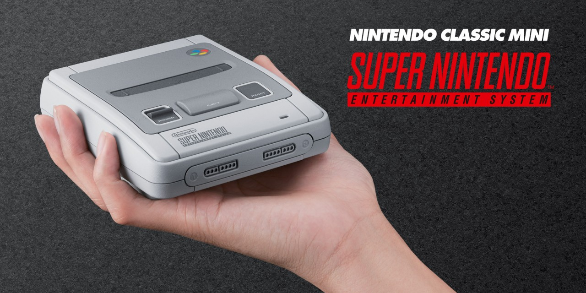
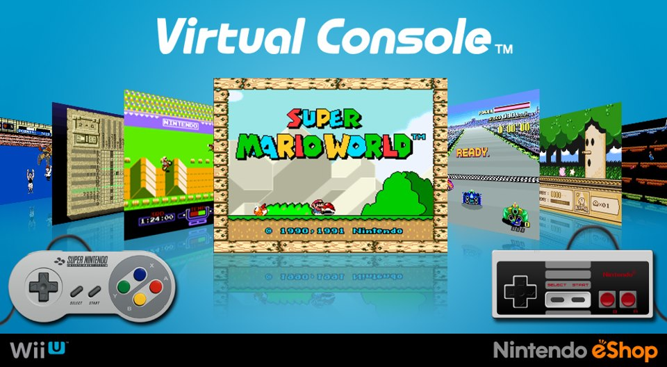
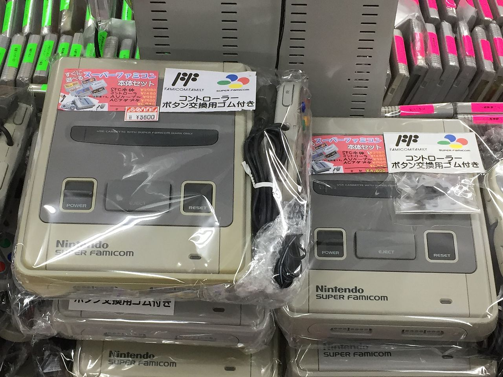
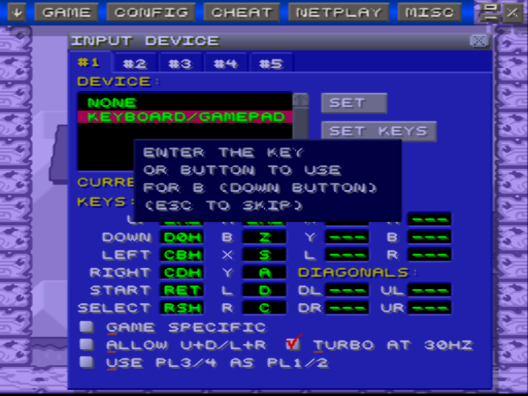

What is the best way to play SNES today?
While purists may maintain that the original hardware is the best way to play, there are several other optionswhich we'll explore a bit here
Released in October 2017, the SNES Classic Mini was highly anticipated and pre orders sold out wihin minutes at most major retailers. The SNES Classic Mini is basically an emulation box, with the form factor of a real Super Nintendo, and best of all brand new SNES controllers! There are 21 games built in, almost all of them the finest the SNES has to offer, including Super Metroid, Zelda: A Link to the Past, Super Mario World, Street Fighter 2 Turbo and more. The only major notable omission is Chrono Trigger, widely regarded as the best RPG on the SNES, though the SNES Classic Mini already includes 4 RPGS, including Final Fantasy VI. While you can't oficially expand the games library, the mini console is extremely easy to hack, so you can quite easily add any games you feel are missing frokm the roster. The emulation quality is superb to boot, looking great on a HDTV!
The adorable, diminuitive SNES mini is a nice compromised between real controllers, high quality emulation, HDTV compatabilty and legitimacy
The Virtual Console has been around since the 2005 launch of the Wii. Many argue that it is a bit overpriced compared to rival PSN and XBL downloadable services and they would hae fair point. There are extensive libraries of games for various consoles available on virtual console. Emulation quality is generally decent, though not quite as good as the SNES Classic Mini. A Wii classic controller is required for WiiVC but on WiiU you can use the standard gamepad. The Nintendo Switch virtual console service has yet to launch as of February 2018, though it is expected later than this year.
A little overpriced perhaps, but it's a great way to play some rare old games legitimately
The real hardware. For pursists, nothing beats the real thing. To truly experience these games as they were intended requires an old CRT tv. While you can buy HDMI adaptors, the SNES games were not designed to be displayed on modern tvs and will require some ingenuity or expensive peripherals just to display them on modern HD TVs. The advantage of real hardware is the feel. While the SNES Classic Mini nails the controllers, there's just something magic about having the physical cartridges and putting them in the cartridge slot and flipping the pwer switch. Not the cheapest option, definitely not the easiest option, but perhaps the most satisfying!
Used SNES consoles aren't too expensive, and due to the lack of moving parts, often in good working order. The battery back up features of carts though, have long since died
PC emulation! Yes it's naughty. Yes we've all done it. It's very easy to find a SNES emulator and build up a vast virtual collection of SNES roms. You can even buy some great USB and bluetooth SNES clone controllers such as 8bitdo's fantastic line of Nintendo themes controllers. There's something missing though... With access to every game ever made for SNES with seconds for free, games just don't feel quite as special... If you're broke though, or wany to try before you buy, it's not a bad option. It will never be as good as the real thing, but it's a perfectly fine way to play games you might otherwise never have the chance toplay.
